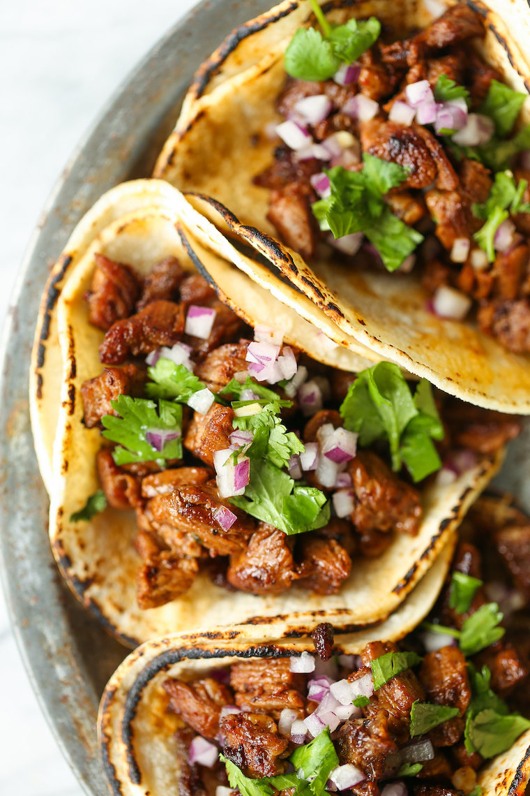

Street Tacos

Description
A Mexican street taco is a small taco on corn tortilla with different
meats (al pastor, carne asada, barbacoa, carnitas or chorizo), served on
small plates in street-style fashion from carts or trucks in empty parking
lots or on the side of the street. Onion, cilantro and cotija cheese are
classic street taco toppings.
Ingredients
- 2 tablespoons soy sauce
- 2 tablespoons lime juice
- 3 cloves garlic
- 2 teaspoons chili powder
- 1 teaspoon ground cumin
- 1 teaspoon dried oregano
- 1 pound flank steak
- 12 street taco tortillas
- 3/4 cup diced red onion
- 1/2 cup cilantro
- 1 lime
Steps
-
In a medium bowl, combine soy sauce, lime juice, garlic, chili powder,
cumin and oregano.
-
In a gallon size Ziploc bag or large bowl, combine soy sauce mixture and
steak; marinate for at least 1 hour up to 4 hours, turning the bag
occasionally.
-
Heat oil in a large cast iron skillet over medium high heat. Add steak
and marinade, and cook, stirring often, until steak has browned and
marinade has reduced, about 5-6 minutes, or until desired doneness.
- Serve steak in tortillas, topped with onion, cilantro and lime.